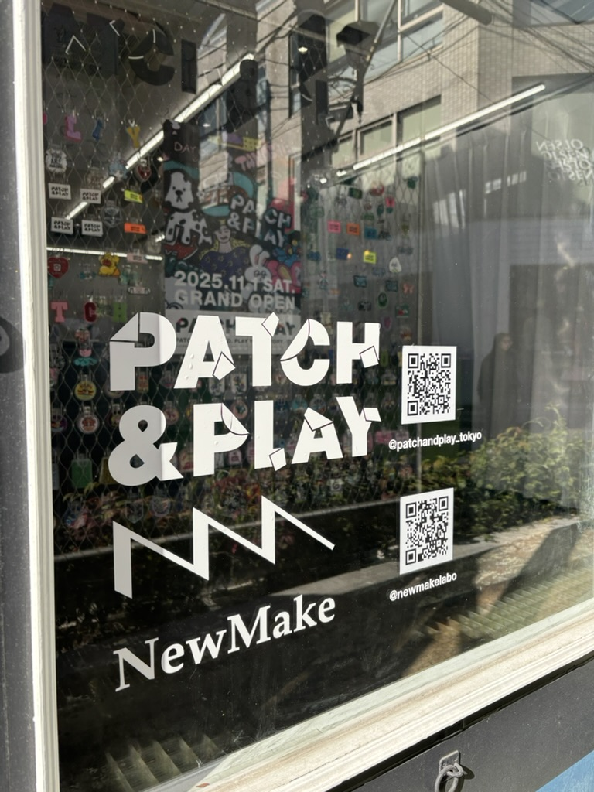
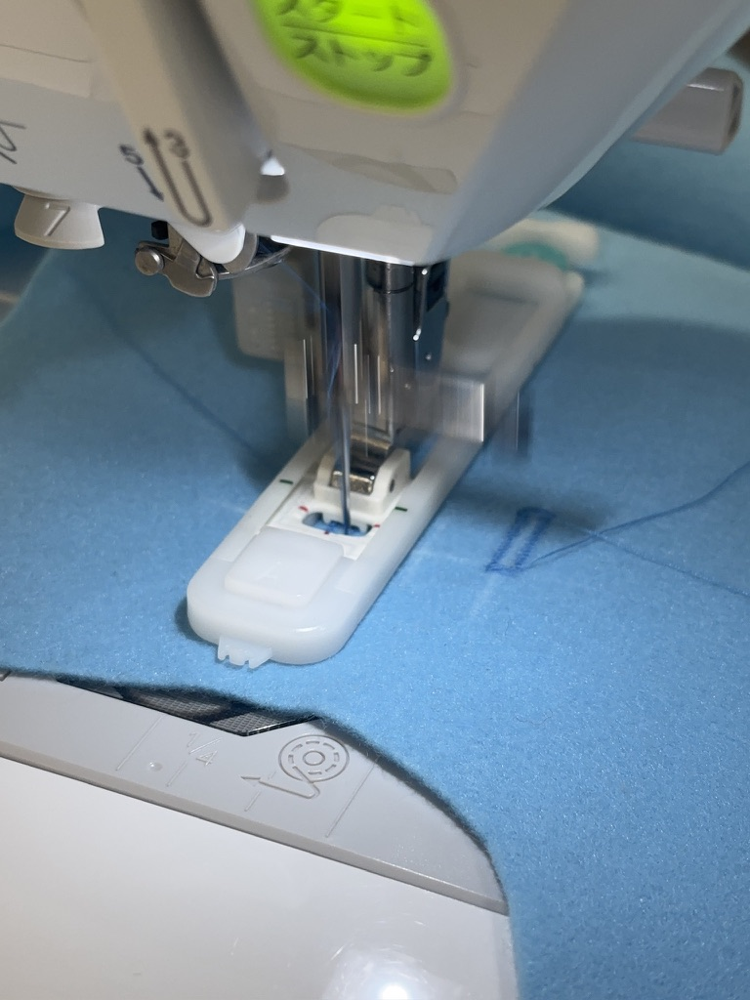
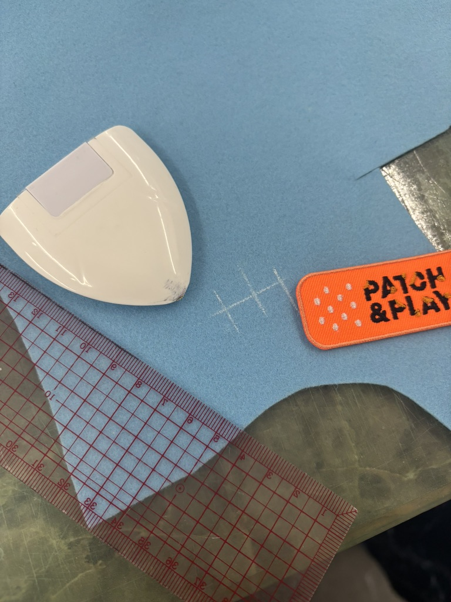
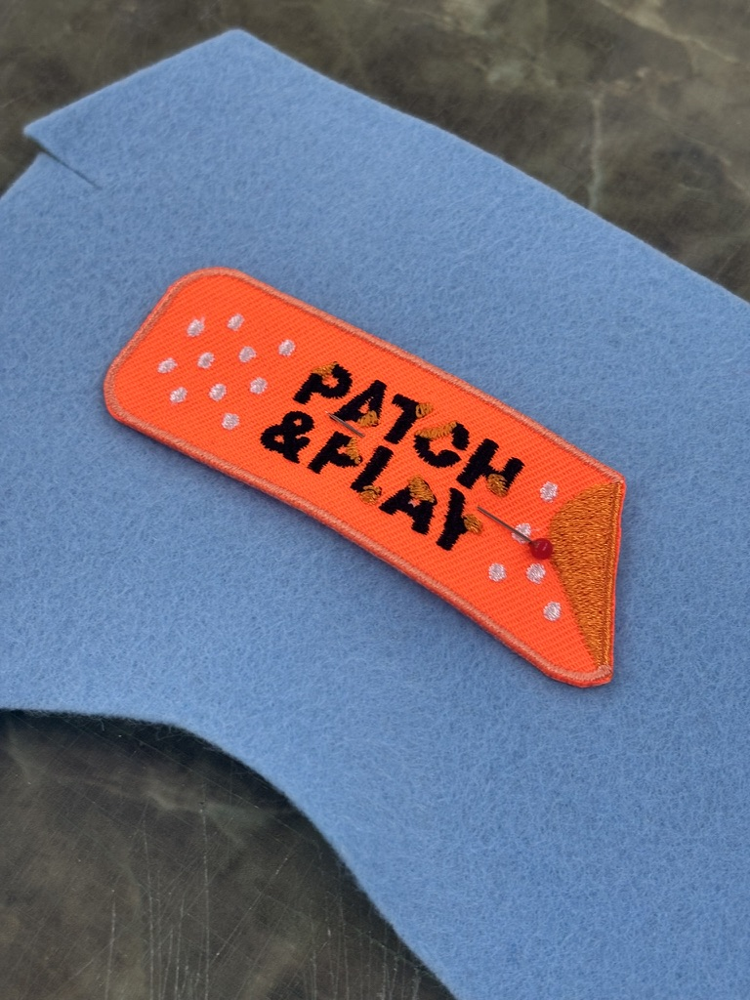
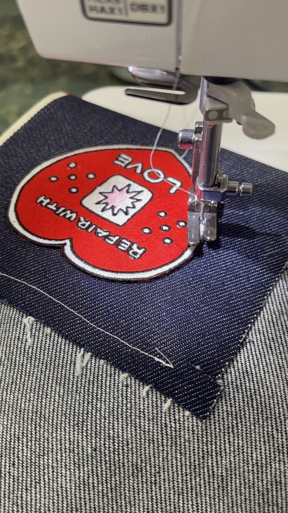
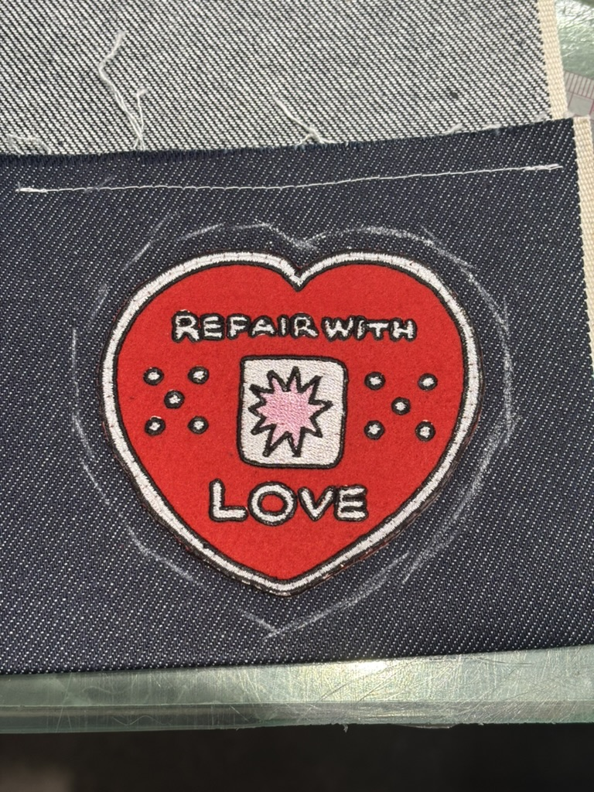
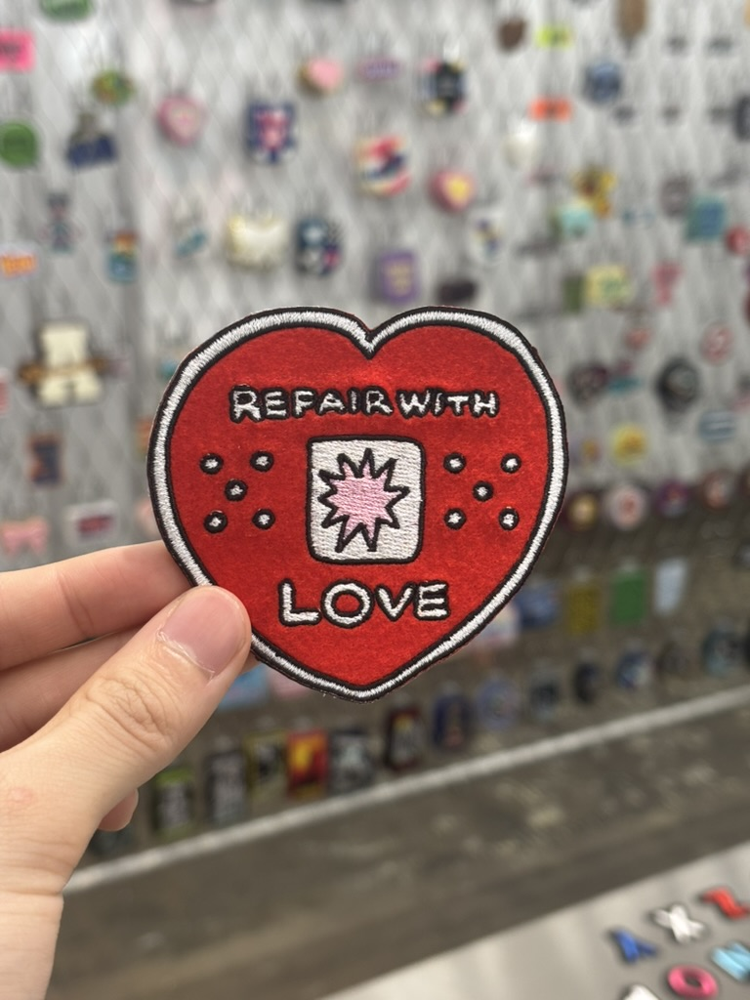
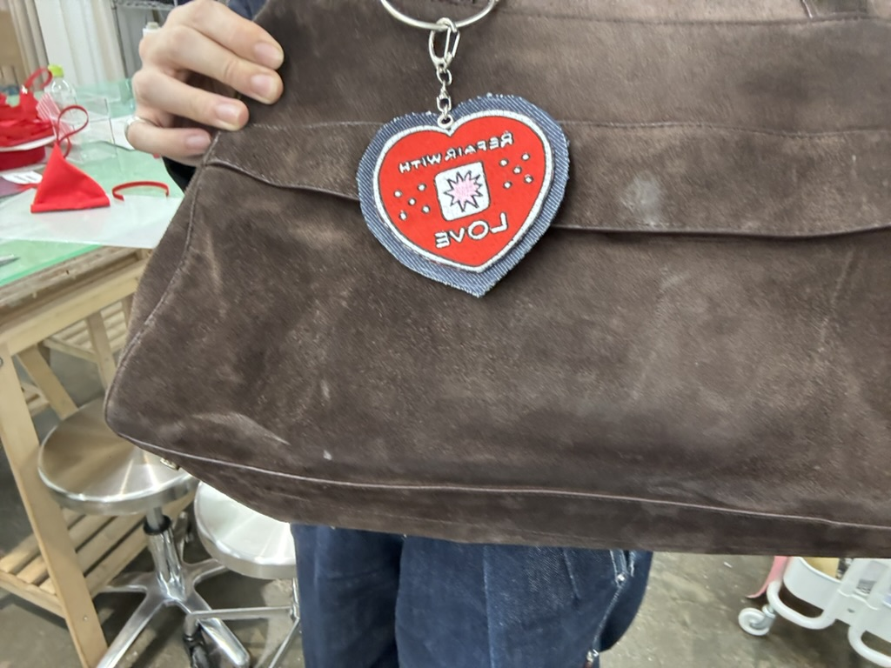
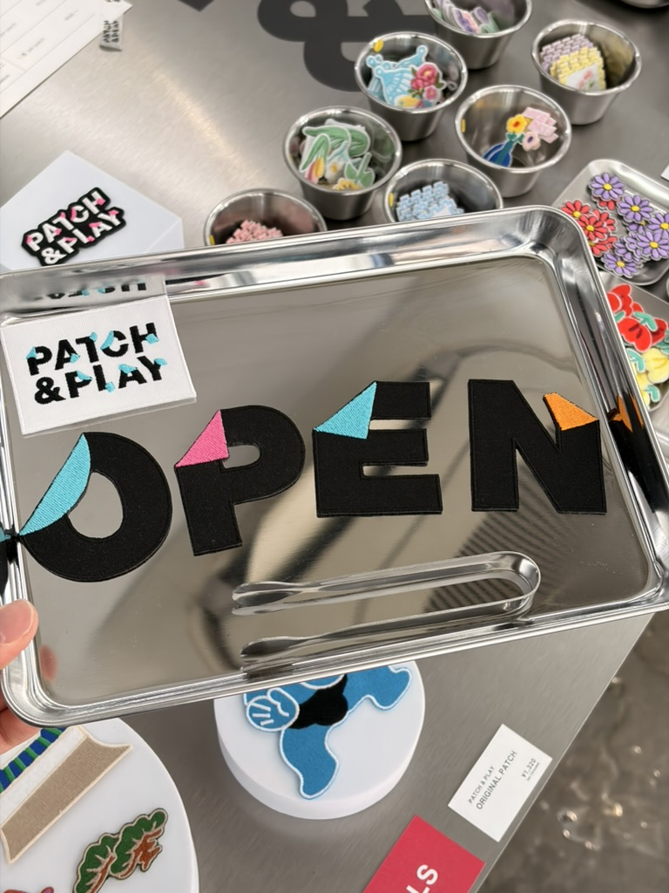
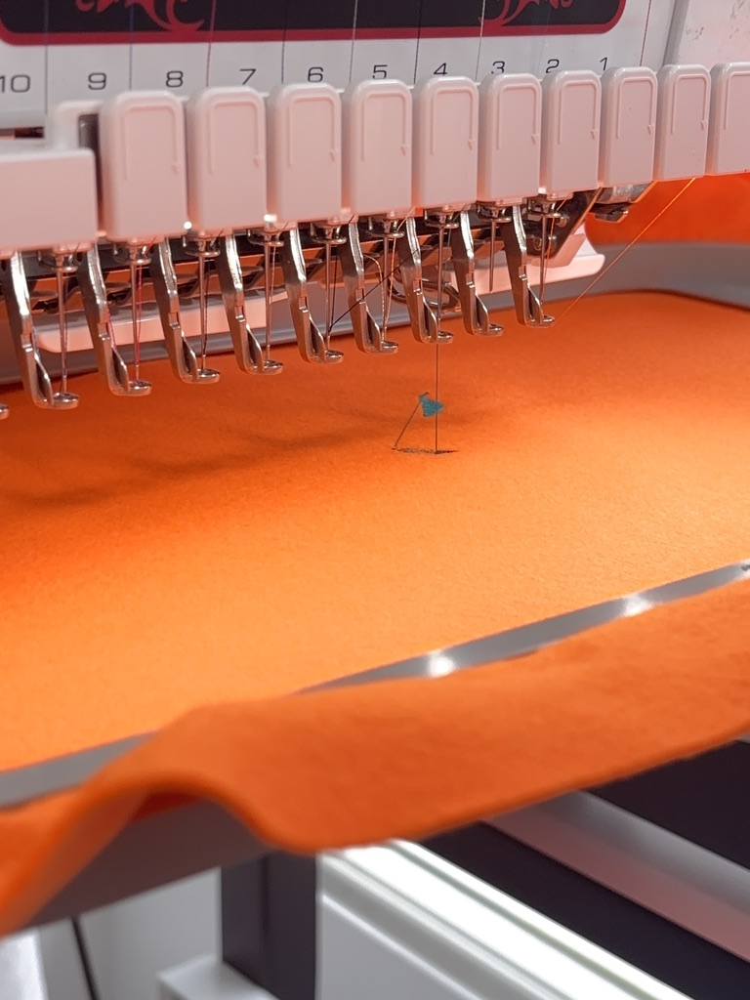

インターン兼店舗スタッフとして、お直しの現場へ
PATCH & PLAY 体験記
ここに辿り着くまで
きっかけは、community loopsでもお世話になっていた青学の学生団体 around20が参加するイベントへの助っ人依頼でした。
渋谷〜原宿
助っ人として参加
の方と出会う
リニューアルOPEN
店舗スタッフ
DO Repairsは、渋谷から原宿にかけての通りで藍染・リペア・カスタムなどが体験できるイベント。 人員が足りないという連絡を受けて助っ人として参加したところ、たまたまNew Make Labの方と知り合いに。 ゼミの内容や自分の興味関心をお話しする中で、興味や親和性を感じていただき、 ちょうど11月からPATCH&PLAYとしてリニューアルオープンするタイミングで、 「店舗スタッフ兼インターンとしてどう？」とお声がけいただきました。
偶然の出会いが、リアルな「服の現場」へのドアを開いてくれた。
PATCH & PLAY とは
PATCH&PLAYは、お直し（リペア）とワッペンを専門とする原宿の店舗。 母体はアパレルのコンサル企業・STORY&Co.。 単に服を「直す」だけでなく、カスタムや個性の表現の場として機能しています。
担当している業務
接客や在庫管理といった基本業務から、近隣店舗への営業まわりまで幅広く担当しています。
Gallery
店内 / 商品 / 作業風景 / コラボ













リニューアルオープンの現場へ
2025年11月、PATCH&PLAYとしてリニューアルオープンした初日から関わらせていただきました。 開店準備から什器の設置、商品ディスプレイの組み方まで、 「お店が生まれる瞬間」を目の当たりにした経験は、授業やゼミでは得られない感覚でした。
接客と、職人の手仕事
店頭に立つ中で実感したのは、「お直し」に持ち込まれる服一つひとつに、 お客様の思い入れがあるということ。 単なる「修理」ではなく、記憶を持った服を次へつなぐという行為の重さを肌で感じました。
職人の方々が実際に手を動かしてお直しをする現場を間近で見られることも、 このインターンならではの体験です。 ミシンの扱い方、素材の見極め方、縫い目の美しさへのこだわり—— JEANOMEのプロジェクトで感じた「服をつくることの難しさ」が、 ここで改めて解像度高く見えてきました。
近隣への営業まわりという経験
近隣の原宿・表参道エリアの店舗へのご挨拶まわり（営業）も担当しています。 実際に足を運び、自分の言葉でPATCH&PLAYを紹介する経験は、 ビジネスコンテストで作った「事業計画書」とはまた違うリアルさがあります。 「届ける」ことの難しさと、顔の見える関係構築の大切さを実感しています。
このインターンで得ていること
-
「服を直す」ことの解像度が上がった
JEANOMEやcommunity loopsを通じて持っていたリメイク・サステナブルへの関心が、 実際のお直しの現場を見ることでより具体的になりました。 -
接客を通じたコミュニケーション設計
お客様一人ひとりのニーズを聞き出し、適切な提案をする経験は、 デザイン思考の「共感」フェーズそのものだと感じています。 -
ビジネスの現場感
在庫管理・営業・企業コラボまで、学生のうちに「お店を動かす側」として関われることは、 ゼミの学びとリアルをつなぐ貴重な場になっています。